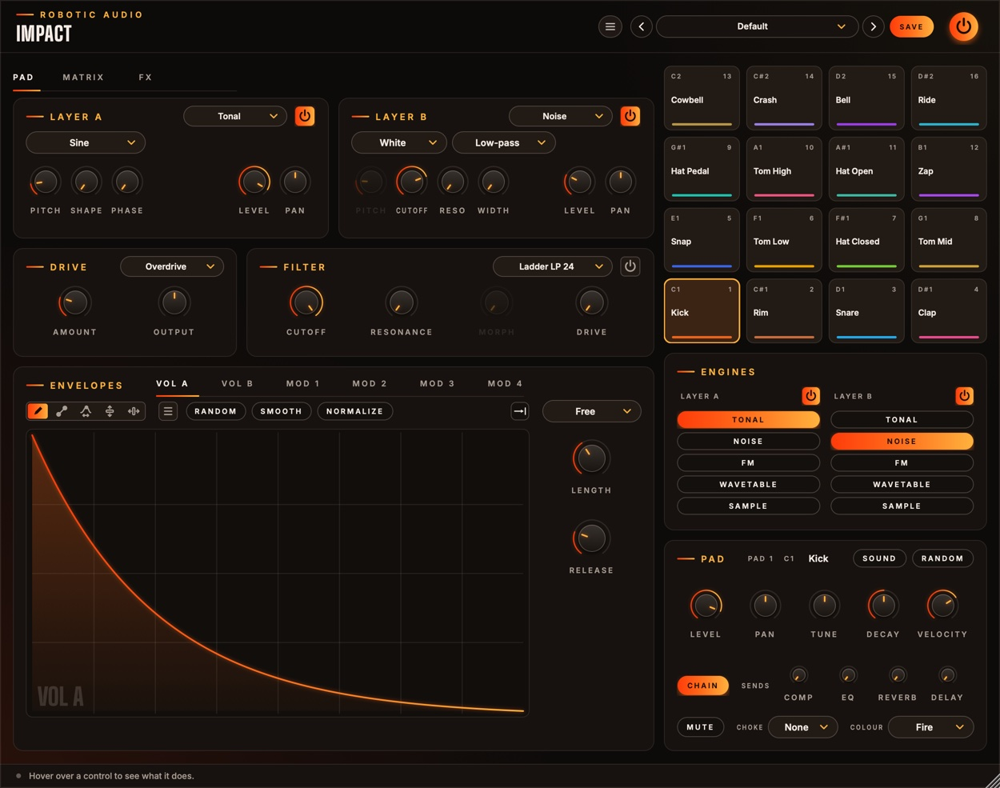
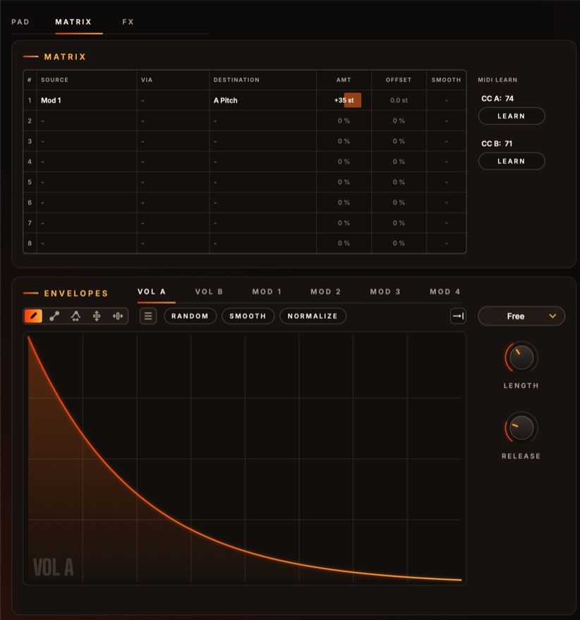
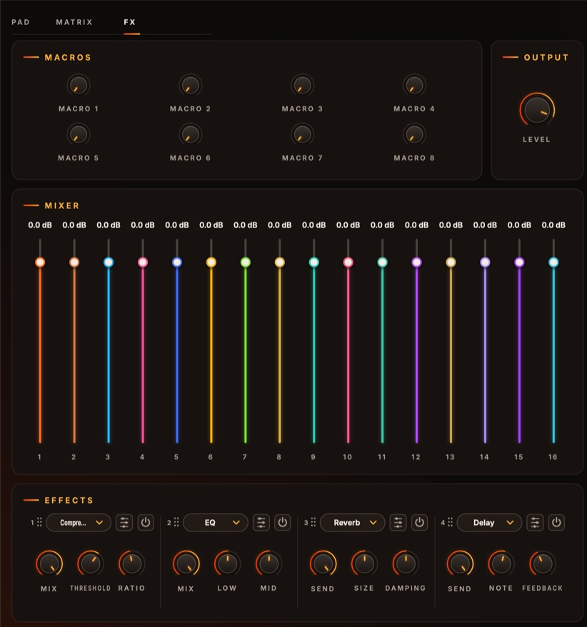

Impact
An electronic percussion designer. Sixteen pads, each a drum built from scratch: two layers of tone, noise, FM, wavetable or sample, shaped by hand-drawn envelopes, moved by its own modulation matrix, then driven, filtered and sent through an effect rack. Forty-six genre kits to start from, a RANDOM button for when you want surprises.
- 16 pads, MIDI C1–D#2
- 2 layers, 5 engines
- 6 drawn envelopes per pad
- 8-slot matrix per pad
- Drive and 14-type filter
- 4 effects, chain and sends
- 47 factory kits
- AU · VST3 · Standalone

Quick start
From a kit to your own drum.
Load a kit
Use the arrows or the menu in the header: DnB, Dubstep, Glitch, IDM and Techno kits, six each, and sixteen more from house to hardstyle.
Play
Click a pad (harder towards its top) or play MIDI notes C1 to D#2. Pad 1 is at the bottom left.
Pick a pad to edit
Clicking a pad selects it: the left side, the Engines and the Pad card now show that pad.
Change its engines
In the Engines card, choose what each layer is made of: TONAL, NOISE, FM, WAVETABLE or SAMPLE.
Roll the dice
Press RANDOM in the Pad card for a new drum from those engines. Again for another.
Shape it
Draw Vol A to change how the hit decays; Mod 1 sweeps Layer A's pitch for the classic drop.
The window
Three pages on the left, the pads always on the right.
- Header
- The preset bar (previous, next, the list, SAVE) for kits, the power button (bypass) and the menu (three lines) with this manual. Click the logo for the version and credits. With an AI key, a >_ beside the preset bar opens the designer. Until Impact is licensed, a DEMO or TRIAL chip beside the menu opens the licence.
- Pad page
- The selected pad's Layer A, Layer B, Drive, Filter and Envelopes.
- Matrix page
- The selected pad's modulation matrix, with the Envelopes under it.
- FX page
- Macros, Output level, the Mixer (every pad's level) and the four Effects.
- Pads
- The sixteen pads, each with its note, number, name and colour.
- Engines
- Each layer's power button and engine.
- Pad
- The selected pad's name, SOUND and RANDOM, its mixer strip (level, pan, tune, decay, velocity, chain, sends, mute), choke group and colour.
Knobs reset with a double-click and take fine steps with Cmd, Ctrl or Alt. A knob the matrix moves shows a ring with its range and a dot where it is. The window can be made larger: drag its bottom-right corner. Its colour follows the selected pad's.
Signal flow
What happens on a hit.
The two layers are mixed, run through the drive and the filter, and set by the sound's Output. Then the pad's mixer strip: level, pan, and where it goes. With Chain lit the pad plays through the four effect slots one after another; off, it goes straight to the output. Each Send feeds one slot's effect on its own, a second copy beside the chain whose wet sound alone comes back: a reverb or delay used as a send effect. The master Level sets the whole kit.
A pad that has finished sounding costs nothing, once its drive and filter have rung out.
Pads
Sixteen drums, C1 to D#2.
Pads run from 1 at the bottom left (C1, MIDI note 36) to 16 at the top right (D#2). Each shows its note, number, name and colour, and lights on every hit.
| Do this | To |
|---|---|
| Click a pad | select it and play it, louder towards its top |
| Right-click a pad | copy, paste, init or randomise its sound, load a built-in or saved sound |
| Drop an audio file on a pad | load it as that pad's sample |
Selecting a pad shows its settings everywhere on the left. Every pad keeps its own sound, saved with the session and the kit.
Layers and engines
Two sound sources per pad.
Each pad has Layer A and Layer B, each with a power button (off, it isn't calculated) and an engine, chosen in the layer's menu or the Engines card. Every layer has Pitch (shown as a frequency), Level and Pan; the rest follows the engine.
A pitched wave, for kicks, toms, zaps and anything with a note. Wave: Sine (pure), Triangle, Saw or Square. Shape pushes it into a soft clip towards a square: more harmonics, more weight. Phase: where in its cycle the wave starts each hit; 0° from zero (soft), 90° from its peak (a click).
Filtered noise for snares, hats, claps and cymbals. Noise: White, Pink (darker) or Metallic (six square waves at a cymbal's ratios, tuned by Pitch). Filter: Low-pass, Band-pass or High-pass at Cutoff, with Reso. Width: how different the noise is left and right.
A sine modulating a sine, for bells, rims, cowbells and metal. Ratio: the modulator's pitch against the carrier's (whole numbers harmonic, in between bells and metal). Amount: brightness. Feedback: the modulator modulating itself, from a sine towards a saw, then noise.
A morphing wavetable with unison, for glitchy, modern percussion. Wavetable: a built-in table or Random; RANDOM rolls a new one (3–5 random waveforms morphing into each other), kept with the pad by its seed. Position, Unison (1–7), Detune, Spread.
An audio file, shaped by the same envelopes. LOAD a file, up to a minute long (or drop one on a pad); Tune (±24 st, faster and slower), Start (where each hit starts) and Reverse.
Drive and filter
After the layers.
Drive
- Type
- Off, Overdrive (warm, slightly asymmetric), Distortion (a harder clip) or Fuzz (a biased hard clip, splatty). Runs at twice the sample rate against aliasing.
- Amount
- How hard the drive is driven. Route an envelope to it in the Matrix for a hit that starts dirty and cleans up. 0 … 100 %
- Output
- The sound's own level, after the drive and the filter (which can leave it much quieter or louder). ±24 dB
Filter
- On
- The power button (Filter On). Off, it costs nothing.
- Type
- Ladder LP / HP / BP at 24 or 12 dB, SVF Morph and Notch, Diode, MS-20, Formant, Comb + and −, Phaser. The knobs' names follow the type (a comb's Cutoff is its Pitch, its Resonance its Feedback).
- Cutoff
- The filter's frequency. 20 Hz … 20 kHz
- Resonance
- A peak at the cutoff; high values ring. 0 … 100 %
- Morph
- Filter Morph: SVF low → band → high, Formant the vowel, Comb damping; greyed out where it does nothing. 0 … 100 %
- Drive
- Filter Drive: pushes the signal into the filter. 0 … 100 %
Envelopes
Six drawings per pad.
Each layer's volume over a hit, drawn by hand: the whole drawing lasts Length. Always on.
Envelopes for the Matrix: a pitch, a filter, an FM amount… Each hit plays them from the start. Mod 1 is on and sweeps Layer A's pitch.
- Length
- How long the whole drawing lasts. The pad's Decay scales it. 5 ms … 10 s
- Sync
- Free: Length sets the time. Note, Dotted, Triplet: the drawing lasts a note value (Rate, clockwise shorter) at the song's tempo (120 BPM without a host); the loop handles snap to a beat grid (hold Cmd to place them freely).
- Loop
- The button with the arrow: click to step through, right-click to pick. Off plays the drawing once. With a loop, the part between the loop handles repeats (forwards, backwards or back and forth) while the note is held: rolls and rhythms.
- Release
- Vol A and B: with the loop on, how long the layer takes to fade out after the note is let go. With the loop off, a hit always plays the drawing through. 5 ms … 5 s
- On · Bipolar
- Mod 1–4: the power button (off, not calculated, nothing into the matrix) and Bipolar (the drawing goes up and down from a centre line, −100 to +100 %; off, from the bottom, 0 to 100 %).
Drawing
The tools are the suite's envelope editor, as in Line Runner: Draw, Line (with a curve handle), Warp, Lift and Move; RANDOM, SMOOTH and NORMALIZE; the menu (≡, or right-click) with undo, copy and paste, edits, random generators, Waveforms, Windows and ready-made shapes, Percussion first: Punch, Snap, Thump, Boom, 808 Decay, Gated, Clap, Flam, rolls, Bouncing Ball, reverses and sweeps. Shift-drag marks a region to edit; Cmd+Z undoes; Cmd+C / Cmd+V copy between envelopes and pads.
Matrix
Eight slots, each pad its own.

Each slot is Source × Amount (× Via) + Offset → Destination, optionally smoothed. Click a cell for its menu; drag Amount, Offset or Smooth up and down, double-click to reset.
The matrix shows the rows in use and one empty row after them. + ADD ROW adds more, up to eight. Right-click a row to insert a row above it, remove it (the rows below move up) or clear it.
- Source
- Envelopes: Vol A, Vol B, Mod 1–4. MIDI: Velocity, Random (a new value per hit), Mod Wheel, Aftertouch, Pitch Bend, CC A, CC B. Macros 1–8.
- Destination
- Layer A and Layer B: Level, Pan, Pitch, Tonal Shape, Noise Cutoff, Noise Resonance, FM Ratio, FM Amount, FM Feedback, WT Position, WT Detune. Drive: Amount. Filter: Cutoff, Resonance, Morph, Drive.
- Amount · Offset
- How far, either way (pitches in semitones: 100 % = 48 st), and a fixed shift. ±100 %
- Smooth
- Glides the slot's output. 0 … 2000 ms
- MIDI learn
- CC A and CC B: click LEARN, then move a knob on your controller.
The Pad card
The selected pad's mixer strip.
- Name
- Click it to rename the pad.
- SOUND
- The pad's sound menu: Copy, Paste, Init, Random, the Built-in drums, Yours (sounds you saved), Save Sound As… and Show Sounds Folder.
- RANDOM
- A new random drum for this pad, from the engines its layers have now. Pick the engines first, then roll.
- Level
- The pad's level in the kit. −48 … +6 dB
- Pan
- Where the pad sits. ±100 %
- Tune
- Both layers' pitch. ±24 st
- Decay
- Scales every envelope's Length: tighter or longer. 25 … 400 %
- Velocity
- How much the hit's velocity sets the pad's level. 0: every hit at full level. 0 … 100 %
- Chain
- Lit: the pad plays through the effect chain. Off: straight to the output, dry; its sends still reach the effects.
- Sends
- Send 1–4, named after the slots' effects: how much of the pad goes to each effect on its own. 0 … 100 %
- Mute
- Silences the pad.
- Choke
- Choke Group: pads in the same group (1–8) cut each other off: a closed hat stops the open one.
- Colour
- Pad Colour: the pad's colour, on the pad and in the editor while it's selected.
Level, Pan, Tune, Decay, Mute, Chain and the sends are host parameters for every pad, so you can automate them. Everything else is the pad's sound, saved with it.
FX page
The kit as a whole.

- Macros
- Eight knobs. Right-click any effect control to map it to one, over a range; route them in each pad's matrix; right-click a macro to rename it.
- Output
- Level: the whole kit's output level, after the effects. −48 … +6 dB
- Mixer
- Every pad's level, each fader in its pad's colour (the same as Level in its strip).
- Effects
- Four slots, starting as Compressor, EQ, Reverb and Delay, all off. Each has a menu (twenty effects), an edit button that opens the effect's own editor with its live display, a power button, Mix (or Send) and its two most useful controls. Drag a slot by its grip to reorder.
Kits and sounds
Whole kits in the header, single drums per pad.
The header's presets are kits: all sixteen pads, the effects and the macros. Default is the built-in kit (Kick, Rim, Snare, Clap, Snap, three toms, three hats, Zap, Cowbell, Crash, Bell and Ride), then forty-six designed kits, each named after its style:
| Genre | Kits |
|---|---|
| DnB | Darkside Coil, Halftime Fog, Jungle Splinter, Liquid Glass, Neuro Rust, Tech Scalpel |
| Dubstep | Deep Dungeon, Growl Pit, Riddim Gears, Swamp Step, Tear Out, Wub Foundry |
| Glitch | Bent Circuit, Bit Rot, Click Garden, Data Moth, Micro Shards, Stutter Lab |
| IDM | Braindance, Fractal Toys, Glass Ants, Lattice, Soft Machine, Wire Birds |
| Techno | Acid Tin, Dub Concrete, Hard Rivet, Hypno Loop, Rumble Hall, Warehouse Iron |
| One per style | Ambient Moss Garden, Breaks Big Beat, Chiptune Pixel Arcade, Cinematic Titan, Electro Chrome Circuit, Footwork Juke Grid, Garage Two Step, Hardstyle Raw Voltage, Hip-Hop Dusty Crates, House Velvet Floor, Industrial Rust Foundry, Latin Percussion Fiesta, Lo-Fi Rainy Tape, Minimal Micro Pulse, Synthwave Neon Drive, Trap Midnight 808 |
SAVE stores the whole kit as a user preset; the menu also has Save As, Delete and Open Folder. To keep a single drum, use SOUND → Save Sound As…: it appears under Yours on every pad. A kit remembers where its samples are on your disk (it doesn't copy them): keep the files where they are, or the layers that play them fall silent.
Designing with Claude
Describe a sound; Claude sets Impact to make it.
With your own Anthropic key, the >_ beside the presets opens a designer: describe what you want in your own words, such as "a deep 808 kick with a short click", and Claude sets the selected pad: its two layers, their envelopes' settings, the drive, filter and the pad's matrix. It is told what every part does and how it is set now, so it can design from scratch or change only what you ask for.
- Keys
- Menu (three lines) > AI...: an Anthropic key for Claude, and an ElevenLabs key for new samples. They are your own, shared by every Robotic Audio plugin and kept on this computer, never in sessions or presets; each design uses your credits with the service. Without a key nothing of this shows.
- >_
- Left of the preset bar, while a key works: opens the designer over the window. Type a description and press Return (or EXECUTE); ESC closes it, and what is running carries on.
- PATCH
- Claude sets the patch, as a NEW SOUND from your words or EDIT THIS: the patch as it is, changed as you ask ("darker", "slower attack"), keeping the rest.
- SAMPLES
- A new sample too: a sample for one of the selected pad's layers (the layer set to Sample, else one that's off, else layer B). Claude writes its prompt and ElevenLabs makes it, in up to four TAKES; the first plays as soon as it arrives, the TAKE buttons switch between them, and all are kept with your samples. With PATCH on, a sample is made only if the patch Claude designs plays one (Claude is told whether it does); SAMPLES alone makes one to fit the patch as it is and changes nothing else. With only the ElevenLabs key, your words are the sample's prompt as written.
- REVERT
- Puts the patch back as it was before Claude's last design.
- SAVE AS PRESET
- Keeps the design as one of your presets, named after your words.
- The log
- What Claude made, and what it changed, part by part.
Recipes
Classic drums from scratch: Init the pad first (SOUND → Init Sound).
Layer A Tonal sine at 50 Hz, Vol A a long decay (808 Decay), Mod 1 a fast drop → A Pitch +24 st. Overdrive at 20 %.
Layer A Tonal triangle at 180 Hz, short; Layer B Noise, Band-pass at 3 kHz, Vol B a Snap. Velocity → B Level.
Two pads of Metallic noise, High-pass at 7 kHz, one short, one long, both in Choke group 1.
Layer A FM, Ratio 3.5x, Amount 60 %, Vol A 30 ms. Mod 1 → A FM Amount +40 % for the snap.
Vol A with the loop Forward over a short hit, Sync Note 1/32: hold the note for a roll, let go and it fades over Release.
Slot 3 Reverb on, Mix 0 %; on the snare, Send 3 at 30 %. Only the snare gets the room.
Licence
Try it, activate it, move it to another computer.
Without a licence, Impact runs as a demo: the sound drops out for 3 seconds every 45 seconds. Everything else works, saving included, so you can try it properly and keep what you made when you buy it. While it isn't licensed, the header shows DEMO (or TRIAL with the days left); click it, or choose Licence... in the menu, for the licence panel. It also opens by itself when the window opens in demo.
- ACTIVATE
- Opens the shop in your browser. Sign in, choose your licence for this computer, and Impact unlocks a few seconds later.
- START TRIAL
- Everything, free, for 14 days, once per computer. The header counts the days down. Activate a licence at any time; your sounds and sessions stay as they are.
- BUY
- The plugin's page on roboticaudio.com, with its Buy button.
- SAVE DEVICE FILE / LOAD LICENCE FILE
- For a computer without the internet. Save the device file, take it to the shop's activation page on a computer that is online, and load the licence file it gives you back.
- DEACTIVATE
- Frees this computer's seat, so you can activate the licence on another one. CHECK NOW confirms the licence with the shop straight away.
Specifications
The numbers.
| Property | Value |
|---|---|
| Pads | 16, MIDI notes 36–51 (C1–D#2), choke groups 1–8 |
| Layers | 2 per pad: Tonal, Noise, FM, Wavetable, Sample |
| Modulation | 6 drawn envelopes and an 8-slot matrix per pad; 8 macros |
| Drive · filter | Overdrive, Distortion, Fuzz at 2× oversampling; 14 filter types |
| Routing | Per pad: through the effect chain or straight out, plus four sends |
| Effects | 4 slots, 20 effects |
| Kits | Default and 46 genre kits |
| CPU | A pad costs nothing once it has finished sounding; effects rest once their tails have died away |
| Formats | AU, VST3, Standalone (with an on-screen keyboard) |
| Licence | Activation in the browser or with a licence file; 14-day trial; a demo without either |